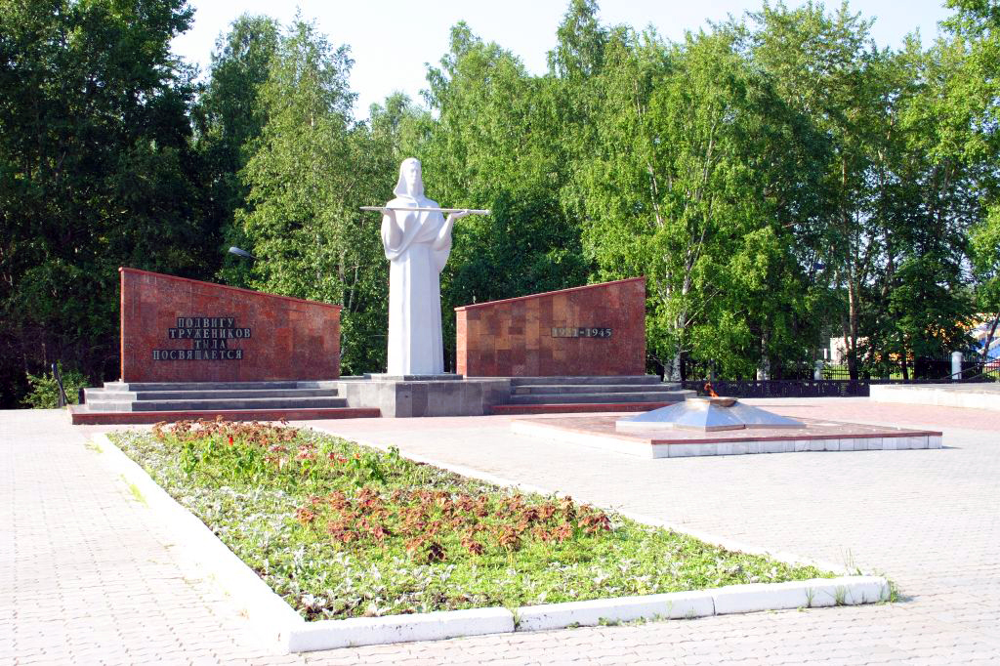

Вечный огонь  Google Maps
Google Maps

Вечный огонь посвящён войнам, которые воевали в Великой Отечественной Войне 1941-1945. Он обозначает вечную память умершим войнам.
Вечный огонь посвящён войнам, которые воевали в Великой Отечественной Войне 1941-1945. Он обозначает вечную память умершим войнам.